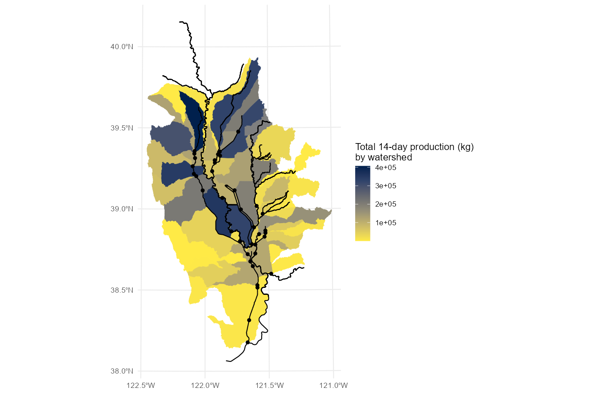

calcs.RmdThis vignette describes the included calculation functions.
The ff_calc_inv_mass and
ff_calc_inv_mass_ts functions use the rice field geometries
in the ff_fields dataset to predict invertebrate mass
production over time based on field acreage. Moss et al. (2009)1 estimated
that invertebrate biomass in flooded post-harvest agricultural fields
increased at an average rate of 0.186 g/m² per day. This relationship
between area and invertebrate mass production forms the basis for these
functions.
We begin with the fields dataset, which contains the
rice field geometries and their areas. Techically, any
data.frame, tibble, or sf object
with an area_ac column containing area in acres can be used
for this function.
ff_fields| unique_id | county | geometry | group_id | area_ac | volume_af |
|---|---|---|---|---|---|
| 1103539 | Glenn | POLYGON ((6526707 2289953, … | 1802010405 | 23.428379 | 9.7618244 |
| 1102849 | Glenn | POLYGON ((6517766 2307611, … | 1802010405 | 23.476331 | 9.7818048 |
| 1103353 | Glenn | POLYGON ((6501679 2309168, … | 1802010405 | 1.055052 | 0.4396049 |
| 1103425 | Glenn | POLYGON ((6525986 2324730, … | 1802010403 | 1.339829 | 0.5582621 |
| 1103546 | Glenn | POLYGON ((6535820 2277869, … | 1802010403 | 48.900074 | 20.3750307 |
Pass the fields to the calc_inv_mass function, along
with the desired number of days (for example, 14 days) to add two new
columns.
daily_prod_kg calculates the production per day based
on areatotal_prod_kg multiplies this value by the number of
days providedff_calc_inv_mass(ff_fields, 14)| unique_id | county | geometry | group_id | area_ac | volume_af | area_m2 | daily_prod_kg | total_prod_kg |
|---|---|---|---|---|---|---|---|---|
| 1103539 | Glenn | POLYGON ((6526707 2289953, … | 1802010405 | 23.428379 | 9.7618244 | 94814.648 | 17.6355246 | 246.89734 |
| 1102849 | Glenn | POLYGON ((6517766 2307611, … | 1802010405 | 23.476331 | 9.7818048 | 95008.713 | 17.6716207 | 247.40269 |
| 1103353 | Glenn | POLYGON ((6501679 2309168, … | 1802010405 | 1.055052 | 0.4396049 | 4269.794 | 0.7941817 | 11.11854 |
| 1103425 | Glenn | POLYGON ((6525986 2324730, … | 1802010403 | 1.339829 | 0.5582621 | 5422.288 | 1.0085455 | 14.11964 |
| 1103546 | Glenn | POLYGON ((6535820 2277869, … | 1802010403 | 48.900074 | 20.3750307 | 197898.598 | 36.8091393 | 515.32795 |
If no number of days is provided, then only the
daily_prod_kg column is created.
A plotting function shorthand is also provided to map the result:
ff_plot_inv_mass(14)These functions can be applied in combination with the other datasets to synthesize and ask additional questions. For example, which watersheds produce the most invertebrate biomass?
inv_mass_14_days <- ff_calc_inv_mass(ff_fields, 14)
total_prod_by_group <- inv_mass_14_days |>
group_by(group_id) |>
summarize(sum_total_prod_kg = sum(total_prod_kg)) |>
st_drop_geometry()
ff_watersheds |>
left_join(total_prod_by_group) |>
ggplot() +
geom_sf(aes(fill = sum_total_prod_kg, color = sum_total_prod_kg)) +
geom_sf(data=ff_streams) + geom_sf(data=ff_canals) + geom_sf(data=ff_returns) +
scale_fill_viridis_c(aesthetics = c("colour", "fill"),
option="cividis",
direction=-1,
name="Total 14-day production (kg) \nby watershed") +
ggplot2::scale_y_continuous(breaks = seq(38, 40, by=0.5)) +
ggplot2::scale_x_continuous(breaks = seq(-122.5, -120.5, by=0.5))
These results will always be directly proportional to total rice field acreage, as this is the only input into the relationship.
The ff_calc_inv_mass_ts function returns the growth in
biomass over time for a selected number of days. This returns a simple
tibble in the following format…
ff_calc_inv_mass_ts(ff_fields, 14) | day | unique_id | total_prod_kg |
|---|---|---|
| 1 | 1103539 | 17.6355246 |
| 1 | 1102849 | 17.6716207 |
| 1 | 1103353 | 0.7941817 |
| 1 | 1103425 | 1.0085455 |
| 1 | 1103546 | 36.8091393 |
| 1 | 1103560 | 11.3354323 |
| 1 | 1103561 | 26.1411859 |
| 1 | 1103563 | 18.7069138 |
| 1 | 1103564 | 56.2166164 |
| 1 | 1103566 | 42.1784267 |
…which can be pivoted as so if needed…
ff_calc_inv_mass_ts(ff_fields, 7) |>
pivot_wider(names_from = day, values_from = total_prod_kg, names_prefix = "day_")| unique_id | day_1 | day_2 | day_3 | day_4 | day_5 | day_6 | day_7 |
|---|---|---|---|---|---|---|---|
| 1103539 | 17.6355246 | 35.271049 | 52.906574 | 70.542098 | 88.177623 | 105.813148 | 123.448672 |
| 1102849 | 17.6716207 | 35.343241 | 53.014862 | 70.686483 | 88.358103 | 106.029724 | 123.701345 |
| 1103353 | 0.7941817 | 1.588363 | 2.382545 | 3.176727 | 3.970909 | 4.765090 | 5.559272 |
| 1103425 | 1.0085455 | 2.017091 | 3.025637 | 4.034182 | 5.042727 | 6.051273 | 7.059819 |
| 1103546 | 36.8091393 | 73.618279 | 110.427418 | 147.236557 | 184.045696 | 220.854836 | 257.663975 |
| 1103560 | 11.3354323 | 22.670865 | 34.006297 | 45.341729 | 56.677162 | 68.012594 | 79.348026 |
| 1103561 | 26.1411859 | 52.282372 | 78.423558 | 104.564743 | 130.705929 | 156.847115 | 182.988301 |
| 1103563 | 18.7069138 | 37.413828 | 56.120742 | 74.827655 | 93.534569 | 112.241483 | 130.948397 |
| 1103564 | 56.2166164 | 112.433233 | 168.649849 | 224.866466 | 281.083082 | 337.299698 | 393.516315 |
| 1103566 | 42.1784267 | 84.356853 | 126.535280 | 168.713707 | 210.892133 | 253.070560 | 295.248987 |
…or plotted to show growth in biomass over time:
ff_fields |>
head(n = 20) |>
ff_calc_inv_mass_ts(10) |>
ggplot() + geom_line(aes(x=day, y=total_prod_kg, color=unique_id))Moss, R.C., Blumenshine, S.C., Yee, J. & Fleskes, J.P. (2009). Emergent insect production in post-harvest flooded agricultural fields used by waterbirds. Wetlands 29(3) pp. 875-883. doi:10.1672/07-169.1↩︎